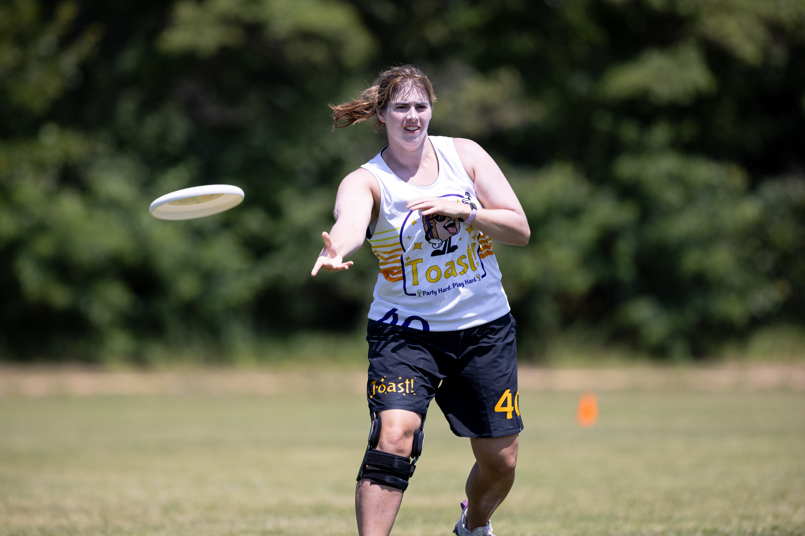

About me:
Name: Holly Vander Stel Nickname: Nope, just Holly Number: 40 Position: Handler, til someone tells me to cut Experience: 10 years (god I'm old) Hometown: Jenison, MI College: Hope College (def didn't play there though) Non-ultimate hobbies: Knitting! (Hit me up for some Toasty knits), Hiking/Camping, Baking A thing: I've only ever played club for teams with somewhat self-deprecating names (Knoxville Mixed Results, Midwestern Mediocrity and now Toast!) Anything else: I played in the inaugural Goalty East Coast Championship in 2017